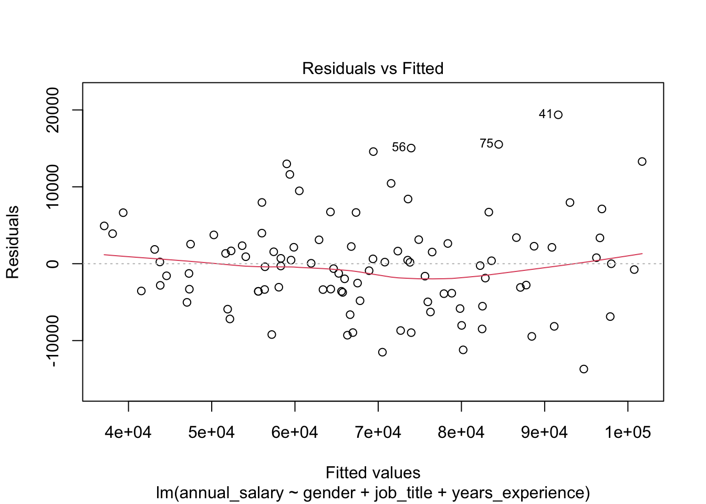
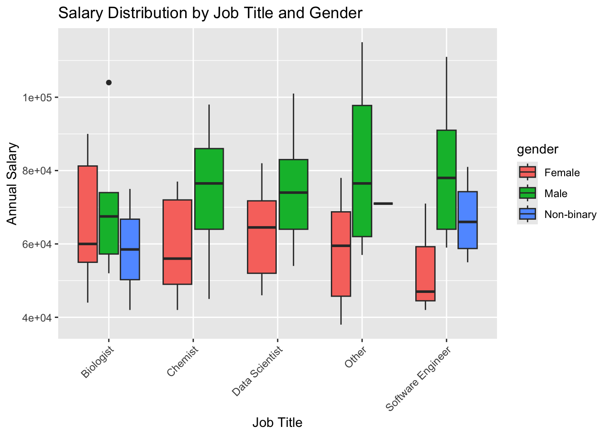

# again, remember to install necessary packages first
#install.packages("mvnormtest)
# load libraries
library(ggplot2)
library(dplyr)
library(corrplot)
library(car)
library(lmtest)
library(mvnormtest)
library(ggpubr) # combined plots
library(vcd) # mosaic plotsDATA 202 - Analyzing Multiple Variables
There are multiple options when conducting the analysis of multiple variables (i.e., more than two variables). In this file, I provide some very basic code to help you get started on your analysis for your paper on analyzing the relationship between multiple variables.
Libraries and packages
Load the libraries we needed. Be sure to install.packages() where needed.
Load sample data from github
We’ll use the gender pay gap data again that I have prepared.
pay_gap_data <- read.csv("https://raw.githubusercontent.com/data-202/sp25/refs/heads/master/data/pay_data.csv")Exploratory analysis
# view the structure of your data
str(pay_gap_data)'data.frame': 100 obs. of 4 variables:
$ gender : chr "Male" "Female" "Male" "Female" ...
$ job_title : chr "Data Scientist" "Chemist" "Data Scientist" "Data Scientist" ...
$ years_experience: num 19 3.4 9.9 5.6 1.4 9.9 1.6 5.6 1.4 16.8 ...
$ annual_salary : num 90000 45000 70000 46000 42000 84000 56000 44000 41000 74000 ...# view the top and bottom of your data
head(pay_gap_data) gender job_title years_experience annual_salary
1 Male Data Scientist 19.0 90000
2 Female Chemist 3.4 45000
3 Male Data Scientist 9.9 70000
4 Female Data Scientist 5.6 46000
5 Non-binary Biologist 1.4 42000
6 Male Chemist 9.9 84000tail(pay_gap_data) gender job_title years_experience annual_salary
95 Male Software Engineer 13.3 78000
96 Male Other 24.1 100000
97 Female Other 19.4 74000
98 Male Biologist 5.2 70000
99 Male Biologist 7.7 64000
100 Male Data Scientist 24.3 100000# gather counts for your categorical data
table(pay_gap_data$gender)
Female Male Non-binary
37 56 7 table(pay_gap_data$job_title)
Biologist Chemist Data Scientist Other
20 19 19 23
Software Engineer
19 # gather descriptive statistics for your numeric variables
pay_gap_data %>%
select(years_experience, annual_salary) %>%
summary() years_experience annual_salary
Min. : 0.20 Min. : 38000
1st Qu.: 5.60 1st Qu.: 56750
Median :10.90 Median : 68500
Mean :11.95 Mean : 68820
3rd Qu.:18.93 3rd Qu.: 81000
Max. :25.00 Max. :115000 Anlayzing bivariate relationships
We then want to analyze the bivariate relationship between each of the variables in our model.
Numeric-Numeric relationships
We’ll start with a scatter plot to visualize the relationship between the numeric variables.
pairs(pay_gap_data[, c("annual_salary", "years_experience")],
main = "Pairwise Scatterplot Matrix")ggplot(pay_gap_data, aes(x = years_experience, y = annual_salary)) +
geom_point(alpha = 0.6) +
geom_smooth(method = "lm", color = "red") +
labs(title = "Experience vs Salary Relationship",
x = "Years of Experience", y = "Annual Salary")# check correlation value
cor.test(pay_gap_data$annual_salary, pay_gap_data$years_experience)
Pearson's product-moment correlation
data: pay_gap_data$annual_salary and pay_gap_data$years_experience
t = 15.413, df = 98, p-value < 2.2e-16
alternative hypothesis: true correlation is not equal to 0
95 percent confidence interval:
0.7726828 0.8906291
sample estimates:
cor
0.8414022 Categorical-Numeric relationships
## Gender vs Salary
ggplot(pay_gap_data, aes(x = gender,
y = annual_salary,
fill = gender)) +
geom_boxplot() +
labs(title = "Salary Distribution by Gender")## Job Title vs Salary (sorted by median salary)
pay_gap_data %>%
mutate(job_title = reorder(job_title, annual_salary, median)) %>%
ggplot(aes(x = job_title, y = annual_salary, fill = job_title)) +
geom_boxplot() +
coord_flip() + # Better readability for long job titles
labs(title = "Salary Distribution by Job Title") +
theme(legend.position = "none")## Job Title vs Experience
pay_gap_data %>%
mutate(job_title = reorder(job_title, years_experience, median)) %>%
ggplot(aes(x = job_title, y = years_experience, fill = job_title)) +
geom_boxplot() +
coord_flip() +
labs(title = "Experience Distribution by Job Title") +
theme(legend.position = "none")Categorical-Categorical relationship
# bar chart of the categorical relationships
ggplot(pay_gap_data, aes(x = job_title, fill = gender)) +
geom_bar(position = "dodge") +
coord_flip() +
labs(title = "Gender Distribution Across Job Titles",
x = "Job Title", y = "Count") +
theme_minimal() +
theme(axis.text.y = element_text(angle = 0, hjust = 1))We can then conduct a chi-square test to see if there is a relation.
## Chi-square test
chisq.test(pay_gap_data$gender, pay_gap_data$job_title)
Pearson's Chi-squared test
data: pay_gap_data$gender and pay_gap_data$job_title
X-squared = 10.259, df = 8, p-value = 0.2473Visualizing the combined relationships
## Salary ~ Experience faceted by Gender
ggplot(pay_gap_data, aes(x = years_experience, y = annual_salary)) +
geom_point(aes(color = gender)) +
geom_smooth(method = "lm") +
facet_wrap(~gender) +
labs(title = "Experience-Salary Relationship by Gender")## Salary ~ Experience colored by Job Title
ggplot(pay_gap_data, aes(x = years_experience, y = annual_salary, color = job_title)) +
geom_point(alpha = 0.7) +
labs(title = "Experience-Salary Relationship by Job Title")Multiple Variable Analysis
Multiple variable analysis is a statistical technique that examines relationships between three or more variables simultaneously. The multiple variable analysis technique involves analyzing how multiple independent variables relate to one or more dependent variables, aiming to understand the interdependence of these variables and their impact on each other.
Research questions
RQ1: Does gender, job title, and years of experience significantly impact an individual’s annual salary?
RQ2: How much variance in salary can be explained by gender and job title after controlling for years of experience?
Base statistical models
Below, I provide the base statistical models to answer the listed research questions. However, be reminded that you should utilize your theoretical framework to drive your analysis. The most important component of our modeling here are the post-hoc tests of our assumptions.
Research Question 1
RQ1: Does gender, job title, and years of experience significantly impact an individual’s annual salary?
# Fit the model
model <- lm(annual_salary ~ gender + job_title + years_experience, data = pay_gap_data)
# Get the summary of the model
summary(model)
Call:
lm(formula = annual_salary ~ gender + job_title + years_experience,
data = pay_gap_data)
Residuals:
Min 1Q Median 3Q Max
-13703 -3632 -128 2751 19370
Coefficients:
Estimate Std. Error t value Pr(>|t|)
(Intercept) 36711.50 1968.85 18.646 < 2e-16 ***
genderMale 13964.08 1411.79 9.891 3.87e-16 ***
genderNon-binary 7665.83 2841.64 2.698 0.00831 **
job_titleChemist -5.78 2140.76 -0.003 0.99785
job_titleData Scientist -47.80 2148.50 -0.022 0.98230
job_titleOther 4453.30 2029.46 2.194 0.03073 *
job_titleSoftware Engineer 622.90 2142.47 0.291 0.77191
years_experience 1893.49 89.47 21.165 < 2e-16 ***
---
Signif. codes: 0 '***' 0.001 '**' 0.01 '*' 0.05 '.' 0.1 ' ' 1
Residual standard error: 6617 on 92 degrees of freedom
Multiple R-squared: 0.8623, Adjusted R-squared: 0.8519
F-statistic: 82.33 on 7 and 92 DF, p-value: < 2.2e-16Checking Assumptions
We then want to check the assumptions for our multiple linear regression model.
We use the which command here to call for specific results.
# Linearity and homoscedasticity
plot(model, which = 1)
# Normality of residuals
plot(model, which = 2)# Influential points
plot(model, which = 4)# Multicollinearity
vif(model) GVIF Df GVIF^(1/(2*Df))
gender 1.118704 2 1.028440
job_title 1.121275 4 1.014411
years_experience 1.014016 1 1.006983# Heteroscedasticity test
bptest(model)
studentized Breusch-Pagan test
data: model
BP = 8.3223, df = 7, p-value = 0.305Research Question 2
RQ2: How much variance in salary can be explained by gender and job title after controlling for years of experience?
# Extract R-squared values
r_squared_full <- model$r.squared
r_squared_experience <-
summary(lm(annual_salary ~ years_experience,
data = pay_gap_data))$r.squared
# Calculate the additional variance explained
variance.model <- r_squared_full - r_squared_experience
variance.modelnumeric(0)Additional tests to examine differences by groupings
## ANOVA: Job Title vs Salary
summary(aov(annual_salary ~ job_title, data = pay_gap_data)) Df Sum Sq Mean Sq F value Pr(>F)
job_title 4 2.704e+08 67594834 0.221 0.926
Residuals 95 2.900e+10 305225060 ## Kruskal-Wallis test (a non-parametric alternative)
kruskal.test(annual_salary ~ job_title, data = pay_gap_data)
Kruskal-Wallis rank sum test
data: annual_salary by job_title
Kruskal-Wallis chi-squared = 0.87467, df = 4, p-value = 0.9282## ANOVA for Gender Differences (3 groups)
# For normally distributed data
gender_salary_aov <- aov(annual_salary ~ gender, data = pay_gap_data)
summary(gender_salary_aov) Df Sum Sq Mean Sq F value Pr(>F)
gender 2 5.462e+09 2.731e+09 11.13 4.46e-05 ***
Residuals 97 2.380e+10 2.454e+08
---
Signif. codes: 0 '***' 0.001 '**' 0.01 '*' 0.05 '.' 0.1 ' ' 1gender_experience_aov <- aov(years_experience ~ gender, data = pay_gap_data)
summary(gender_experience_aov) Df Sum Sq Mean Sq F value Pr(>F)
gender 2 37 18.58 0.327 0.722
Residuals 97 5511 56.81 ## Post-hoc pairwise comparisons (if ANOVA is significant)
# Tukey's Honest Significant Differences
TukeyHSD(gender_salary_aov) Tukey multiple comparisons of means
95% family-wise confidence level
Fit: aov(formula = annual_salary ~ gender, data = pay_gap_data)
$gender
diff lwr upr p adj
Male-Female 15511.1 7611.431 23410.770 0.0000283
Non-binary-Female 5386.1 -9982.659 20754.859 0.6827936
Non-binary-Male -10125.0 -25073.224 4823.224 0.2453817TukeyHSD(gender_experience_aov) Tukey multiple comparisons of means
95% family-wise confidence level
Fit: aov(formula = years_experience ~ gender, data = pay_gap_data)
$gender
diff lwr upr p adj
Male-Female 0.9510135 -2.849798 4.751825 0.8228241
Non-binary-Female -1.0436293 -8.438085 6.350827 0.9397284
Non-binary-Male -1.9946429 -9.186764 5.197479 0.7870735## Non-parametric alternative (Kruskal-Wallis)
kruskal.test(annual_salary ~ gender, data = pay_gap_data)
Kruskal-Wallis rank sum test
data: annual_salary by gender
Kruskal-Wallis chi-squared = 17.035, df = 2, p-value = 2e-04kruskal.test(years_experience ~ gender, data = pay_gap_data)
Kruskal-Wallis rank sum test
data: years_experience by gender
Kruskal-Wallis chi-squared = 0.69574, df = 2, p-value = 0.7062## Pairwise Wilcoxon Rank Sum tests with Bonferroni correction
pairwise.wilcox.test(pay_gap_data$annual_salary, pay_gap_data$gender,
p.adjust.method = "bonferroni")
Pairwise comparisons using Wilcoxon rank sum test with continuity correction
data: pay_gap_data$annual_salary and pay_gap_data$gender
Female Male
Male 0.00013 -
Non-binary 1.00000 0.62443
P value adjustment method: bonferroni pairwise.wilcox.test(pay_gap_data$years_experience, pay_gap_data$gender,
p.adjust.method = "bonferroni")
Pairwise comparisons using Wilcoxon rank sum test with continuity correction
data: pay_gap_data$years_experience and pay_gap_data$gender
Female Male
Male 1 -
Non-binary 1 1
P value adjustment method: bonferroni ## Enhanced gender-salary plot
ggplot(pay_gap_data, aes(x = gender, y = annual_salary, fill = gender)) +
geom_boxplot() +
geom_jitter(width = 0.2, alpha = 0.4) +
stat_compare_means(method = "anova", label.y = max(pay_gap_data$annual_salary)*1.1) +
labs(title = "Salary Distribution Across Gender Groups",
subtitle = "Three-group comparison with ANOVA results")## Faceted experience-salary relationship
ggplot(pay_gap_data, aes(x = years_experience, y = annual_salary)) +
geom_point(aes(color = gender)) +
geom_smooth(method = "lm") +
facet_wrap(~gender, ncol = 3) +
labs(title = "Experience-Salary Relationship by Gender Group")Multivariate Analysis
Multivariate analysis and multiple variable analysis are often confused, but they have a key distinction. Multivariate analysis specifically examines multiple dependent or outcome variables simultaneously, while multiple variable analysis (also called multivariable analysis) focuses on a single outcome variable with multiple independent variables.
Research question
RQ1: Do gender and job title jointly influence both salary and years of experience?
RQ2: Are there significant differences in salary distributions across job titles when accounting for gender and experience?
MANOVA
RQ1: Do gender and job title jointly influence both salary and years of experience?
To answer RQ1, we’ll first run a multiple analysis of variance (MANOVA) on our data.
manova_result <- manova(cbind(annual_salary, years_experience) ~ gender + job_title, data = pay_gap_data)
summary(manova_result) Df Pillai approx F num Df den Df Pr(>F)
gender 2 0.51380 16.0756 4 186 2.532e-11 ***
job_title 4 0.08312 1.0082 8 186 0.4313
Residuals 93
---
Signif. codes: 0 '***' 0.001 '**' 0.01 '*' 0.05 '.' 0.1 ' ' 1# Perform univariate ANOVAs for each dependent variable
summary.aov(manova_result) Response annual_salary :
Df Sum Sq Mean Sq F value Pr(>F)
gender 2 5.4621e+09 2731054952 10.742 6.35e-05 ***
job_title 4 1.6067e+08 40167715 0.158 0.9589
Residuals 93 2.3644e+10 254236336
---
Signif. codes: 0 '***' 0.001 '**' 0.01 '*' 0.05 '.' 0.1 ' ' 1
Response years_experience :
Df Sum Sq Mean Sq F value Pr(>F)
gender 2 37.2 18.578 0.3158 0.7300
job_title 4 39.5 9.881 0.1680 0.9542
Residuals 93 5471.0 58.828 # Post-hoc tests for job title (if significant)
TukeyHSD(aov(annual_salary ~ job_title, data = pay_gap_data)) Tukey multiple comparisons of means
95% family-wise confidence level
Fit: aov(formula = annual_salary ~ job_title, data = pay_gap_data)
$job_title
diff lwr upr p adj
Chemist-Biologist 2744.7368 -12819.59 18309.07 0.9880828
Data Scientist-Biologist 4902.6316 -10661.70 20466.96 0.9050536
Other-Biologist 3676.0870 -11177.98 18530.15 0.9585863
Software Engineer-Biologist 1955.2632 -13609.07 17519.59 0.9967520
Data Scientist-Chemist 2157.8947 -13604.72 17920.50 0.9954695
Other-Chemist 931.3501 -14130.35 15993.05 0.9998006
Software Engineer-Chemist -789.4737 -16552.08 14973.14 0.9999138
Other-Data Scientist -1226.5446 -16288.24 13835.15 0.9994066
Software Engineer-Data Scientist -2947.3684 -18709.98 12815.24 0.9851493
Software Engineer-Other -1720.8238 -16782.52 13340.87 0.9977552TukeyHSD(aov(years_experience ~ job_title, data = pay_gap_data)) Tukey multiple comparisons of means
95% family-wise confidence level
Fit: aov(formula = years_experience ~ job_title, data = pay_gap_data)
$job_title
diff lwr upr p adj
Chemist-Biologist 0.8871053 -5.890221 7.664432 0.9961911
Data Scientist-Biologist 1.6607895 -5.116537 8.438116 0.9600164
Other-Biologist -0.3419565 -6.810004 6.126091 0.9998930
Software Engineer-Biologist 0.4502632 -6.327063 7.227590 0.9997349
Data Scientist-Chemist 0.7736842 -6.089981 7.637350 0.9978703
Other-Chemist -1.2290618 -7.787521 5.329398 0.9850252
Software Engineer-Chemist -0.4368421 -7.300507 6.426823 0.9997764
Other-Data Scientist -2.0027460 -8.561205 4.555713 0.9143543
Software Engineer-Data Scientist -1.2105263 -8.074192 5.653139 0.9880778
Software Engineer-Other 0.7922197 -5.766240 7.350679 0.9972112Check MANOVA assumptions
# Multivariate normality
mshapiro.test(t(model.matrix(manova_result)[, -1]))
Shapiro-Wilk normality test
data: Z
W = 0.74976, p-value = 9.227e-12# Homogeneity of covariance matrices
leveneTest(annual_salary ~ gender * job_title, data = pay_gap_data)Levene's Test for Homogeneity of Variance (center = median)
Df F value Pr(>F)
group 12 0.597 0.8391
87 leveneTest(years_experience ~ gender * job_title, data = pay_gap_data)Levene's Test for Homogeneity of Variance (center = median)
Df F value Pr(>F)
group 12 0.6305 0.8108
87 Visual of the results
ggplot(pay_gap_data, aes(x = job_title, y = annual_salary, fill = gender)) +
geom_boxplot() +
theme(axis.text.x = element_text(angle = 45, hjust = 1)) +
labs(title = "Salary Distribution by Job Title and Gender",
x = "Job Title", y = "Annual Salary")
ggplot(pay_gap_data, aes(x = job_title, y = years_experience, fill = gender)) +
geom_boxplot() +
theme(axis.text.x = element_text(angle = 45, hjust = 1)) +
labs(title = "Years of Experience Distribution by Job Title and Gender",
x = "Job Title", y = "Years of Experience")RQ2: Are there significant differences in salary distributions across job titles when accounting for gender and experience?
To answer research question two, we’ll run some additoinal analyses.
model_salary <- lm(annual_salary ~ job_title + gender + years_experience, data = pay_gap_data)
anova(model_salary)Analysis of Variance Table
Response: annual_salary
Df Sum Sq Mean Sq F value Pr(>F)
job_title 4 2.7038e+08 6.7595e+07 1.5436 0.1962
gender 2 5.3524e+09 2.6762e+09 61.1142 <2e-16 ***
years_experience 1 1.9615e+10 1.9615e+10 447.9384 <2e-16 ***
Residuals 92 4.0287e+09 4.3790e+07
---
Signif. codes: 0 '***' 0.001 '**' 0.01 '*' 0.05 '.' 0.1 ' ' 1summary(model_salary)
Call:
lm(formula = annual_salary ~ job_title + gender + years_experience,
data = pay_gap_data)
Residuals:
Min 1Q Median 3Q Max
-13703 -3632 -128 2751 19370
Coefficients:
Estimate Std. Error t value Pr(>|t|)
(Intercept) 36711.50 1968.85 18.646 < 2e-16 ***
job_titleChemist -5.78 2140.76 -0.003 0.99785
job_titleData Scientist -47.80 2148.50 -0.022 0.98230
job_titleOther 4453.30 2029.46 2.194 0.03073 *
job_titleSoftware Engineer 622.90 2142.47 0.291 0.77191
genderMale 13964.08 1411.79 9.891 3.87e-16 ***
genderNon-binary 7665.83 2841.64 2.698 0.00831 **
years_experience 1893.49 89.47 21.165 < 2e-16 ***
---
Signif. codes: 0 '***' 0.001 '**' 0.01 '*' 0.05 '.' 0.1 ' ' 1
Residual standard error: 6617 on 92 degrees of freedom
Multiple R-squared: 0.8623, Adjusted R-squared: 0.8519
F-statistic: 82.33 on 7 and 92 DF, p-value: < 2.2e-16As noted in class, these are base models to help you consider your analysis. However, your theory should lead all of your work. Please let me know if you have any questions.